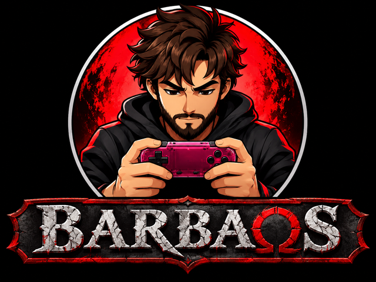
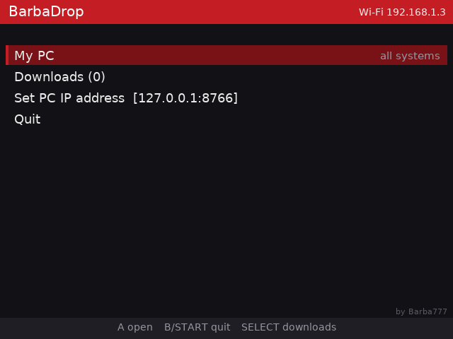
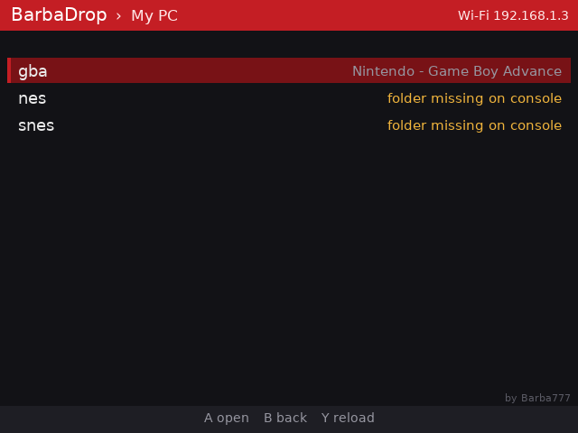
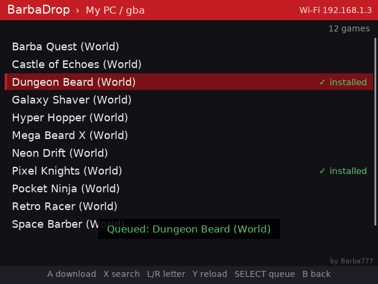
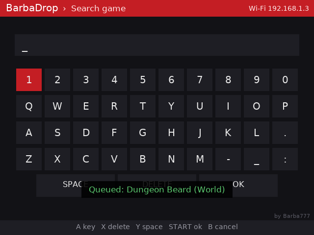
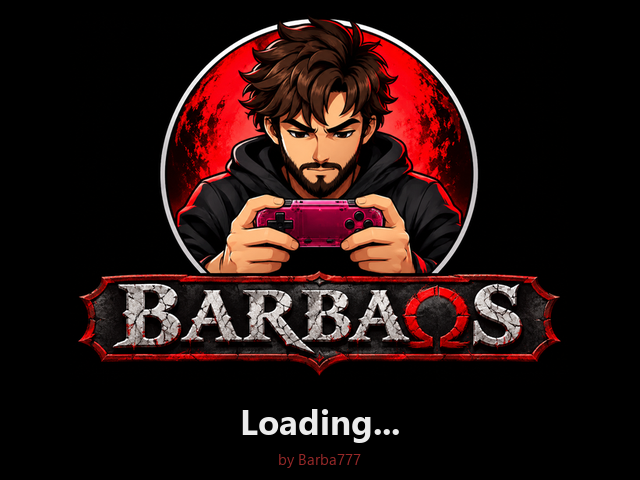

A customized dArkOS4Clone build for the R36S. Flash it with Rufus and you get the BarbaOS look, its own apps in the Options menu, the EpicAeolus theme and a fix for V20 boards with no sound.

The dArkOS4Clone system is untouched. BarbaOS adds its look and its apps on top.
BarbaOS boot logo and a "Loading..." screen every time a game starts.
Download games from your own PC over Wi-Fi, with search, a queue, extraction and boxart.
The EpicAeolus EmulationStation theme by AeolusUX comes preinstalled, sized for the R36S screen.
A tested profile for R36S V20 (2025-05-18) boards whose speaker stays silent.
You need a microSD card (16 GB or more), 7-Zip and Rufus.
BarbaOS-1.0-R36S.img.xz.7z.001, .002, …) from the
latest release into one folder..001 file → 7-Zip → Extract Here. You get BarbaOS-1.0-R36S.img.xz..img.xz file. Rufus reads it directly, no need to extract it.dtb_selector_win32.exe to pick your console model:
origin panel… for an original R36S, clone type… for clones.dtb_selector.Apply BarbaOS on top of your card and keep your games. Download BarbaOS-1.0.zip
from the release, extract it and run the installer in PowerShell.
# BOOT = D:, EASYROMS = E: .\install.ps1 -Boot D: -Roms E: # V20 board with no sound .\install.ps1 -Boot D: -Roms E: -FixAudio
Put your games in a folder on your PC, start the BarbaDrop server, and download them on the console over Wi-Fi.
BarbaDrop extracts .zip/.7z, adds the boxart and refreshes the game list when you quit.




| Button | Action |
|---|---|
| A | Open / download |
| B | Back |
| X | Search |
| Y | Reload list |
| L / R | Previous / next letter |
| SELECT | Download queue |
| START | Quit |
Some R36S-V20 (2025-05-18) boards stay silent with the clone type1 panel1 amp profile:
it drives the speaker amplifier through a pin (GPIO3_A7) that this board does not use.
Pick clone type1 panel1 (without amp) in dtb_selector,
or run the installer with -FixAudio. The display settings are the same; it just leaves that pin alone.
